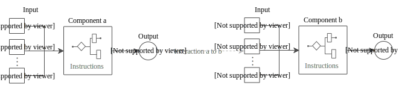
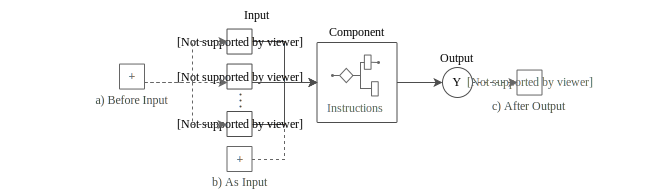
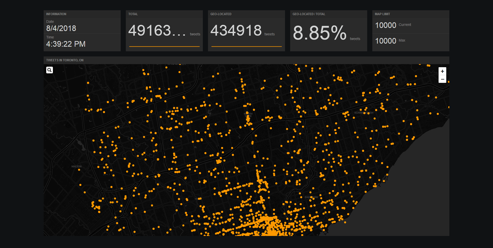

<!doctype html>
<html lang="en">
    <head>
        <meta charset="utf-8">
        <title>Context-aware Geographic Information Systems for Real-time Security Event Forecasting</title>
        <link rel="stylesheet" href="./css/reveal.css">
        <link rel="stylesheet" href="./css/theme/white.css" id="theme">
        <link rel="stylesheet" href="./css/highlight/zenburn.css">
        <link rel="stylesheet" href="./css/print/paper.css" type="text/css" media="print">
		<link rel="stylesheet" href="./edit/style.css">

    </head>
    <body>

        <div class="reveal">
            <div class="slides"><section  data-markdown><script type="text/template">

# Context-aware Geographic Information Systems for Real-time Security Event Forecasting

<small>Richard Wen</small>  
<small>rwen@ryerson.ca</small>  
  
<small>Department of Civil Engineering<br>Ryerson University</small>  
  
<small>August 28, 2018</small>
  
<small>*Research proposal to fulfil a requirement for the degree of<br>Doctor of Philosophy in Civil Engineering*</small>  
</script></section><section  data-markdown><script type="text/template">
# Outline

1. Introduction
2. Background
3. Methods
4. Preliminary Results
5. Conclusion
6. References
</script></section><section  data-markdown><script type="text/template">
# 1. Introduction
</script></section><section  data-markdown><script type="text/template">
## Over 40 Million Deaths Per Year

<!-- .slide: data-background="black" -->
<iframe data-src="./edit/visuals/global_deaths.html" width="100%" height="500px"></iframe>
</script></section><section  data-markdown><script type="text/template">
## Security Events

<!-- .slide: data-background="black" data-background-transition="none" data-background-image="./edit/img/security_event.png" -->

* Disrupt society and daily life
* Economic burden
* Loss of life
</script></section><section  data-markdown><script type="text/template">
### Frequent

<!-- .slide: data-state="frequent" data-background="black" data-background-transition="none" data-background-iframe-id="visual" data-background-iframe="./edit/visuals/ksi_cluster.html"  -->
</script></section><section  data-markdown><script type="text/template">
### Non-random

<!-- .slide: data-state="non-random" data-background="black" data-background-transition="none" data-background-iframe="./edit/visuals/ksi_heat.html" -->
</script></section><section  data-markdown><script type="text/template">
### Situational

<!-- .slide: data-state="situational" data-background="black" data-background-transition="none" data-background-iframe="./edit/visuals/ksi_bar.html" -->
</script></section><section  data-markdown><script type="text/template">
## Forecasting Security Events
</script></section><section  data-markdown><script type="text/template">
## Context

* Situation surrounding event
* What event and when will it occur?
* How probable is the event given the context?
</script></section><section  data-markdown><script type="text/template">
<!-- .slide: data-state="context-data" data-background-iframe="./edit/visuals/context_data.html" -->
</script></section><section  data-markdown><script type="text/template">
## Geographic Information Systems (GIS)

* Set of hardware and software
* Store, manage, and present spatial data
* Information extraction from data
</script></section><section  data-markdown><script type="text/template">
## Context-aware GIS

* Enable GIS to use contextual data
* Adapt and react to context
* Improve security event forecasts
</script></section><section  data-markdown><script type="text/template">
## Research Objectives

1. Develop methods/models for context-aware GIS
2. Conduct experiments with context-aware GIS
</script></section><section  data-markdown><script type="text/template">
## Objective 1 Components

1. **Data Source**: contextual data extraction
2. **Database**: store and query 1.
3. **Data**: process and manipulate 2.
4. **Model**: forecast security events using 3.
5. **Visualization**: present outputs of 4.
</script></section><section  data-markdown><script type="text/template">
## Objective 2 Criteria

1. **Relevant**: involves security event forecasting
2. **Practical**: uses non-artificial data
3. **Measurable**: uses qualitative or quantitative forecasting model assessments
4. **Reproducible**: results can be produced again given the same data
</script></section><section  data-markdown><script type="text/template">
## Contributions

1. Conceptual framework for context-aware GIS
2. Software framework for context-aware GIS
3. Software architecture for context-aware GIS
4. Methods for forecasting security events
</script></section><section  data-markdown><script type="text/template">
# 2. Background
</script></section><section  data-markdown><script type="text/template">
## Web GIS and Architectures
</script></section><section  data-markdown><script type="text/template">
## Client Server

</img>
</script></section><section  data-markdown><script type="text/template">
## Service-oriented

</img>
</script></section><section  data-markdown><script type="text/template">
## Cloud-based

</img>
</script></section><section  data-markdown><script type="text/template">
## Context-aware Systems

> "A system is context-aware if it uses context to provide relevant information and or services to the user, where relevancy depends on the user’s task."

<span class="reference">Ref: Dey (2001)</span>
</script></section><section  data-markdown><script type="text/template">
## Natural Language Processing (NLP)

* Extracting useful data from text
* Structure contextual data
* N-grams, word distributions
</script></section><section  data-markdown><script type="text/template">
## Machine Learning

* Discover and apply patterns from data
* **Supervised**: predict from known values
* **Clustering**: grouping similar data
* **Incremental Learning**: continuous model updates
</script></section><section  data-markdown><script type="text/template">
## Problem Statement

* **Real-time GIS**: large continuous spatial data
* **Event-driven Architecture**: react to events
* **Context-aware GIS**: react and adapt to context
</script></section><section  data-markdown><script type="text/template">
## Context-aware GIS Integration

</img>
</script></section><section  data-markdown><script type="text/template">
# 3. Methods
</script></section><section  data-markdown><script type="text/template">
## Software Frameworks

* Produce applications in a standardized way
* Component interaction
* Reusable, consistent, comparable
</script></section><section  data-markdown><script type="text/template">
## Software Development

* Object-oriented programming
* Test-driven approach
* Prototyping
</script></section><section  data-markdown><script type="text/template">
## Software Components

</img>
</script></section><section  data-markdown><script type="text/template">
## Base Component

</img>
</script></section><section  data-markdown><script type="text/template">
## Component Interaction

</img>
</script></section><section  data-markdown><script type="text/template">
## Component Extension

</img>
</script></section><section  data-markdown><script type="text/template">
## Data Component

* Extract, store, process data
* Location, time, and numbers
* NLP methods for text
</script></section><section  data-markdown><script type="text/template">
## NLP Word Distribution

Given `a a b c c d`:

| word | count |
|------|-------|
| a    | 2     |
| b    | 1     |
| c    | 2     |
| d    | 1     |
</script></section><section  data-markdown><script type="text/template">
## Model Component

* Statistics and machine learning
* **Supervised classification**: linear regression, naive bayes, decision trees
* **Clustering**: k-means, mixture models
* **Incremental Learning**: neural networks
</script></section><section  data-markdown><script type="text/template">
## Metric Component

| Metric    | Description                                     |
|-----------|-------------------------------------------------|
| Accuracy  | Proportion of correct values     |
| Precision | Correct values using model categories  |
| Recall    | Correct values using actual categories |
| F1 Score  | Accuracy using precision and recall             |
| RMSE      | Scaled diff. of actual and model values    |
</script></section><section  data-markdown><script type="text/template">
## Interface Component

* Map
* Dashboard
</script></section><section  data-markdown><script type="text/template">
## Potential Experiments

1. Traffic Collision Forecasting
2. Crime Event Forecasting
3. Health Symptom Monitoring and Forecasting
</script></section><section  data-markdown><script type="text/template">
## Traffic Collision and Crime Event Forecasting

* Data: social media, open data, government
* Methods: NLP, supervised learning
* Outcomes: web app and models for forecasts
</script></section><section  data-markdown><script type="text/template">
## Health Symptom Monitoring and Forecasting

* Data: social media, open data, government
* Methods: NLP, supervised learning, clustering
* Outcomes: web app and models for monitoring and forecasts
</script></section><section  data-markdown><script type="text/template">
# 4. Preliminary Results
</script></section><section  data-markdown><script type="text/template">
## Software

* Developed Node.js packages for Twitter data, MongoDB, and PostgreSQL
* Explored potential software for framework components
* Hbase, GeoMesa, scikit-learn, Apache Kafka, D3.js
</script></section><section  data-markdown><script type="text/template">
## Prototype Dashboard

</img>
</script></section><section  data-markdown><script type="text/template">
# 5. Conclusion

* Context-aware GIS framework and architecture
* Experiments of context-aware GIS
* Methods for forecasting and monitoring security events
</script></section><section  data-markdown><script type="text/template">
# 6. References
</script></section><section  data-markdown><script type="text/template">
<small>
* Dey, A. K. (2001). Understanding and using context. Personal and ubiquitous computing, 5(1), 4–7.
* World Health Organization. (2015). Global status report on road safety 2015: Monitoring health for the sustainable. Retrieved June 26, 2018, from http://www.who.int/violence_injury_prevention/road_safety_status/2015/en/
* World Health Organization. (2018). World health statistics 2018: Monitoring health for the sdgs. Retrieved June 26, 2018, from http://www.who.int/gho/publications/world_health_statistics/2018/en/
* World Health Organization, United Nations Office on Drugs and Crime, & United Nations Development Programme. (2014). Global status report on violence prevention 2014. Retrieved June 26, 2018, from http://www.who.int/violence_injury_prevention/publications/violence/en/
</small>
</script></section></div>
        </div>
		
		<div id="logo-div">
			
		</div>

        <script src="./edit/visuals/js/jquery.min.js"></script>
		<script src="./lib/js/head.min.js"></script>
        <script src="./js/reveal.js"></script>

        <script>
            function extend() {
              var target = {};
              for (var i = 0; i < arguments.length; i++) {
                var source = arguments[i];
                for (var key in source) {
                  if (source.hasOwnProperty(key)) {
                    target[key] = source[key];
                  }
                }
              }
              return target;
            }
            // Optional libraries used to extend on reveal.js
            var deps = [
              { src: './lib/js/classList.js', condition: function() { return !document.body.classList; } },
              { src: './plugin/markdown/marked.js', condition: function() { return !!document.querySelector('[data-markdown]'); } },
              { src: './plugin/markdown/markdown.js', condition: function() { return !!document.querySelector('[data-markdown]'); } },
              { src: './plugin/highlight/highlight.js', async: true, callback: function() { hljs.initHighlightingOnLoad(); } },
              { src: './plugin/zoom-js/zoom.js', async: true },
              { src: './plugin/notes/notes.js', async: true },
              { src: './plugin/math/math.js', async: true }
            ];
            // default options to init reveal.js
            var defaultOptions = {
              controls: true,
              progress: true,
              history: true,
              center: true,
              transition: 'slide', // none/fade/slide/convex/concave/zoom
              dependencies: deps
            };
            // options from URL query string
            var queryOptions = Reveal.getQueryHash() || {};
            var options = {"transition":"slide","controls":true,"slideNumber":true};
            options = extend(defaultOptions, options, queryOptions);
        </script>
		

        <script>
            Reveal.initialize(options);
        </script>
		<script src="./edit/js/reload_iframes.js"></script>
    </body>
</html>
